A Guided Reading · Literature & Language
A close reading of a thirteen-frame visual presentation on Leo Tolstoy's War and Peace — from a candlelit salon in 1805 to a family fireside in 1820 — with the vocabulary, symbols, and ideas worth carrying into your own English.
In the year 1811, a great comet blazed over Europe, and millions of people read its burning tail as a warning written across the heavens. Leo Tolstoy froze that moment of collective dread into one of the most famous images in War and Peace: the awkward young aristocrat Pierre Bezukhov stands alone at night, looks up at the same sky that terrifies the world, and experiences the ominous light as the beginning of love. The presentation behind this article builds its entire visual essay out of exactly such collisions — the cosmic against the deeply personal, the emperor's decree against the soldier's whisper.
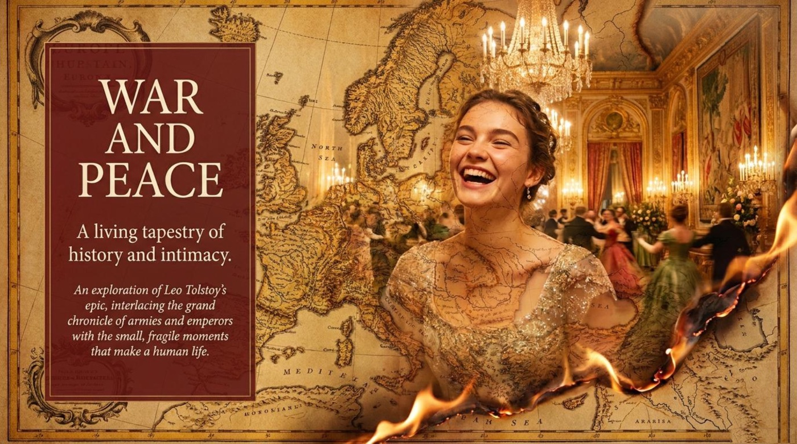
The material itself is a visual presentation assembled in Gemini Notebook, and it moves in one sweeping arc — from Anna Pavlovna Scherer's soirée in St. Petersburg in 1805, through the ice of Austerlitz and the fire of Moscow, to a quiet family evening in 1820. Its educational value is threefold. It compresses one of the longest novels ever written into a journey anyone can follow, it models sophisticated literary English worth borrowing for your own writing, and it argues a thesis worth remembering long after the last frame: the only thing that is truly beautiful is the ordinary. It is important to understand that the deck treats this line as a survival strategy rather than a pretty sentiment, and the reading below follows that argument frame by frame.
Pay attention to the architecture before the details. The title frame promises "A living tapestry of history and intimacy" and immediately explains the promise: the presentation is "an exploration of Leo Tolstoy's epic, interlacing the grand chronicle of armies and emperors with the small, fragile moments that make a human life." That sentence is the key to the whole novel. Tolstoy refuses to separate the history book from the diary, and every frame that follows holds the two together.
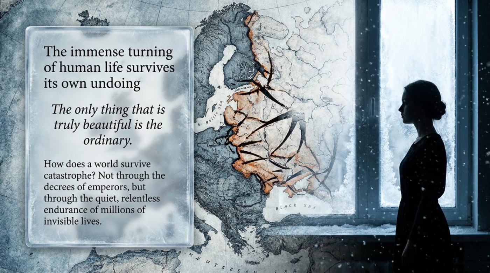
The thesis frame states its claim in a single memorable line — "The only thing that is truly beautiful is the ordinary." — and then grounds it in history: a world endures catastrophe "not through the decrees of emperors, but through the quiet, relentless endurance of millions of invisible lives." The key point is already visible, and the key point never changes: greatness, in this material, belongs to the invisible many.
The journey begins at a glittering evening party in St. Petersburg. The deck describes the setting in one polished sentence: "The courts of St. Petersburg project sheer invincibility. Europe is treated as a polite chessboard for emperors, where diplomacy is an elegant fiction and war is merely a topic of salon conversation." Notice how the metaphors do the heavy lifting: the chessboard turns continents into pieces that rulers move at will, and elegant fiction turns diplomacy into theatre performed for an audience of courts.
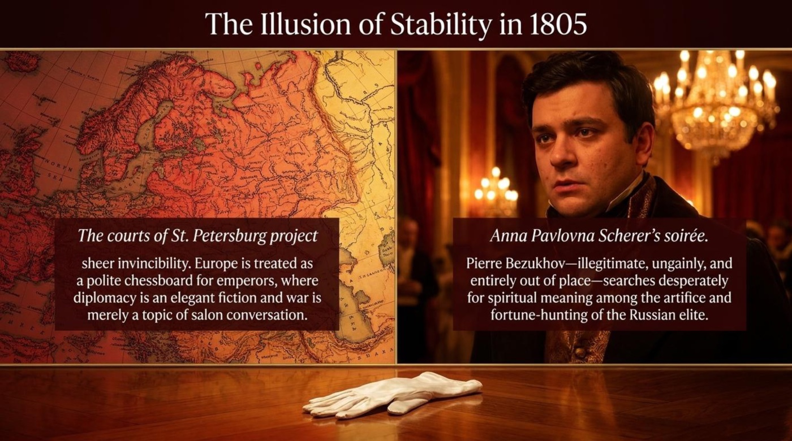
Into this room walks the deck's first real-life example, Pierre Bezukhov, introduced with three cutting words: "Pierre Bezukhov—illegitimate, ungainly, and entirely out of place—searches desperately for spiritual meaning among the artifice and fortune-hunting of the Russian elite." Pierre's genuine heart makes him a failure in the salon and, in time, the moral centre of the novel. The frame quietly implies a rule that runs through the whole story: the places that accept you most easily are often the places that understand you least.
💡 Practical advice: when you describe a social world in English, borrow the deck's technique of pairing an abstract noun with a concrete image — artifice and fortune-hunting, chessboard and emperors. Two-word collisions of this kind make descriptions memorable, and they are exactly the collocations that editors and examiners reward.
The deck pins the battle of Austerlitz to December 2, 1805, counts 68,000 casualties, and distils the disaster into one brutal sentence: "The myth of tactical genius shatters against the reality of cold steel." Prince Andrei Bolkonsky, the novel's ambitious idealist, marches into battle dreaming of his own heroic morning and falls wounded on the field. The frame's interpretation is severe: "Looking at his former hero Napoleon, Andrei sees only a petty, vain man compared to the infinite cosmos above."
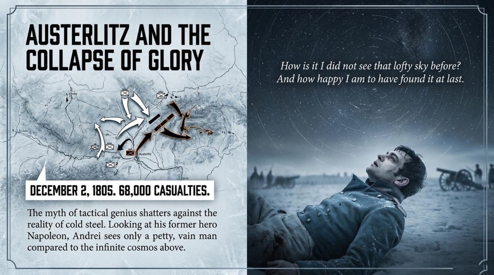
Andrei's own words close the frame: "And how happy I am to have found it at last." The lofty sky becomes his first honest teacher. It should be noted that the deck marks this as the moment the novel's scales tip for good — the infinite sky outweighs the small emperor.
📌 Practical advice: shatter is one of the most useful "illusion" verbs in English because it shows a belief breaking like glass. Keep a small personal list of such verbs — shatter, evaporate, collapse, crumble — and attach each to one noun you care about: a myth shatters, an illusion evaporates, a reputation crumbles.
The deck then zooms out and stages the novel's philosophy of history as a contest between two theories. In the first corner stands the Great Man Theory: "History driven by the will of 'heroes' like Napoleon and Alexander. Defined by grand strategy, ego, and the illusion of absolute control over events." In the other corner stands what the deck calls the Infinitesimals of Will: "History as the mathematical integration of millions of small, individual choices. Defined by sudden fears, dropped letters, and the ordinary, microscopic gestures of soldiers."
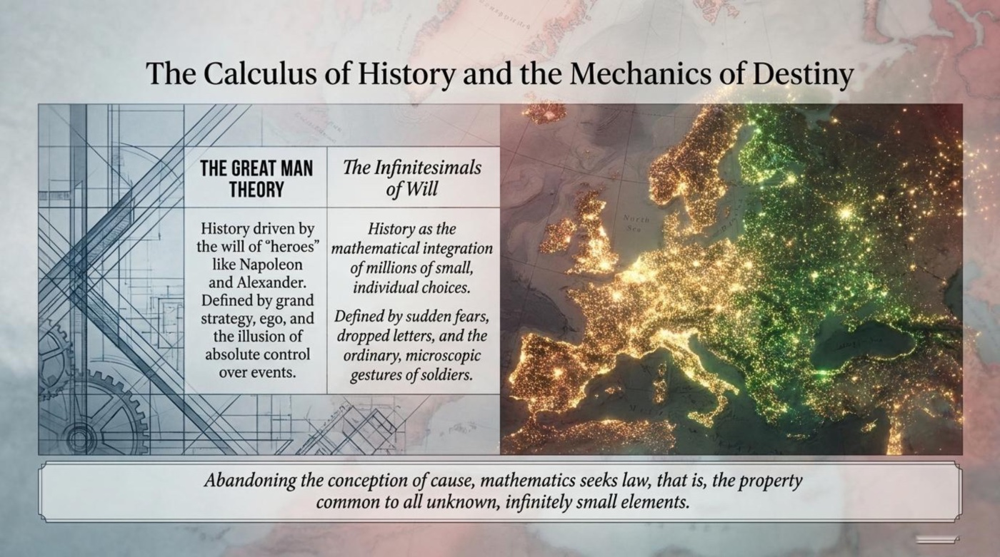
Tolstoy's own mathematical metaphor follows on the frame: "Abandoning the conception of cause, mathematics seeks law, that is, the property common to all unknown, infinitely small elements." The sentence rewards slow reading. It says that history cannot name one single cause of everything, so it looks instead for patterns across countless tiny movements — the way calculus sums infinitely small parts into a curve. Interestingly, the deck borrows the vocabulary of mathematics to defend the dignity of small people.
💡 Practical advice: the two-corner structure is a gift for your own essays. Present the grand theory in one paragraph, the humble theory in the next, and let the reader feel the scale change. Signposts such as in the first view, by contrast, and at the level of individual lives hold such an argument together.
The story now changes key. The frame for Otradnoe, the Rostov family estate, celebrates "the primal, exhilarating pulse of Russian country life, far removed from the suffocating salons of St. Petersburg." Here lives Natasha Rostova, and the deck assigns her a physician's role: "Natasha's exuberant vitality—teaching a traumatized, grieving Andrei how to hope and love again." The officer who dismissed Napoleon as petty is cured, quite literally, by a young woman's delight in ordinary life.
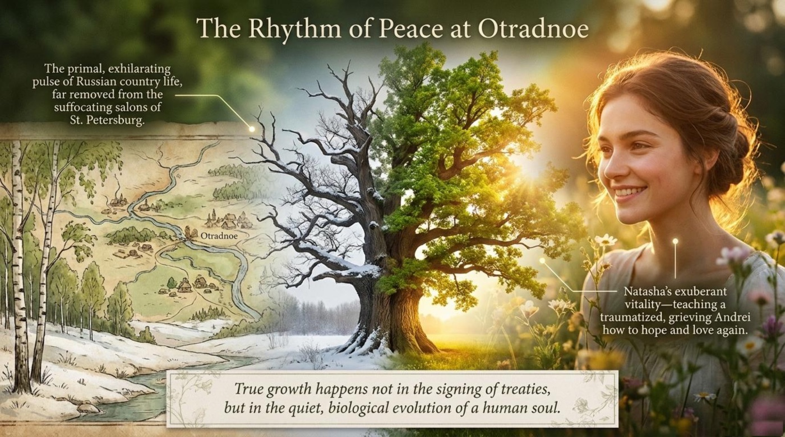
The frame's summary line deserves memorizing: "True growth happens not in the signing of treaties, but in the quiet, biological evolution of a human soul." Pay attention to the word biological. Growth here is not an achievement; it is an organism opening toward light, which is why the deck pairs Andrei's recovery with an old oak tree returning to leaf.
📌 Practical advice: contrast pairs like exhilarating pulse versus suffocating salons carry a whole argument in two adjectives. Collect such opposed pairs as you read — they are the fastest route to fluency in written English.
A comet enters, and the deck handles it with beautiful doubleness. To the world, "The Great Comet portends unprecedented catastrophe for the world—the coming invasion of 1812." To Pierre, looking at the same sky, the comet "mirrors a profound internal awakening and his newly realized love for Natasha." The frame's summary line deserves a place in any notebook: "The cosmic and the deeply personal, bound together by the revolving heavens."
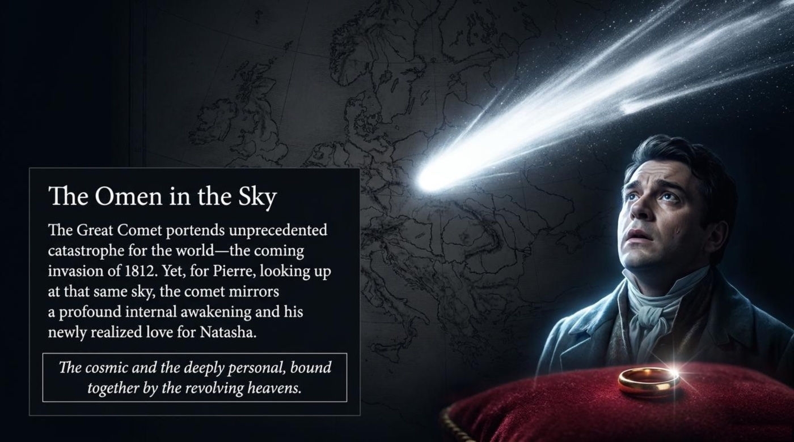
Then the catastrophe arrives on foot. The frame for the summer of 1812 thunders in capital letters: "600,000 men cross the Niemen. The end of reason." Its interpretation is the darkest sentence in the deck: "The grand engine of war is fueled entirely by the destruction of individual worlds. Every boot sinking into the mud is an entire universe extinguished by the whims of emperors."
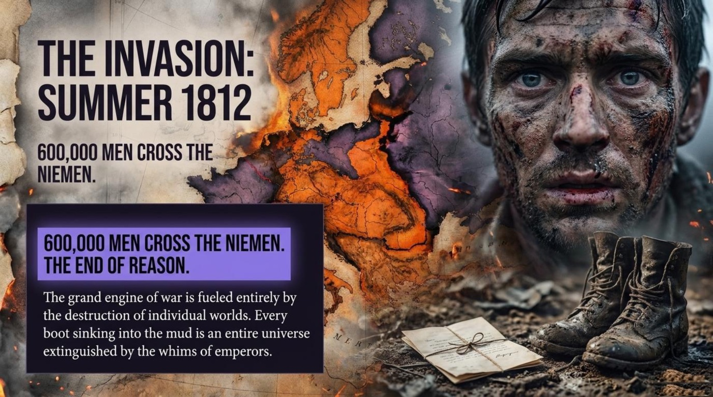
💡 Practical advice: notice how the deck makes statistics human. It never lets a number stand alone; 600,000 men instantly becomes 600,000 extinguished universes. In your own writing, follow every large number with a single concrete image, and your readers will stay with you.
Borodino follows on September 7, 1812 — "70,000 casualties in a single day" — and here the deck retires the vocabulary of genius altogether: "The illusion of military genius evaporates into raw endurance. Victory here is not tactical; it is a spiritual resilience rooted deep in the Russian earth and the collective will of the peasantry."
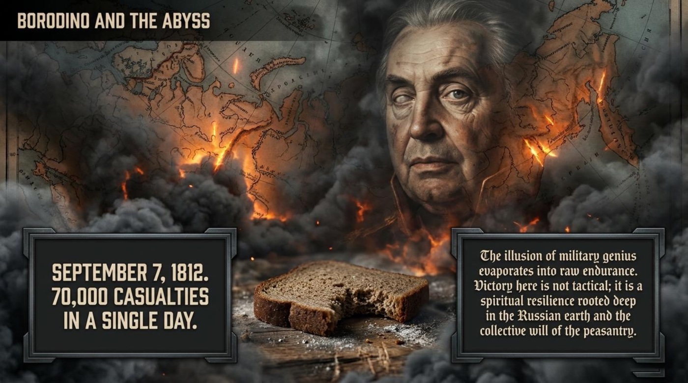
Moscow then burns by choice. The frame explains: "Moscow is sacrificed to the flames to deny Napoleon his prize. In the inferno, the old aristocracy, the artifice, and the grand illusions of 1805 are reduced entirely to ash." And it adds the sentence that ties the fire back to the novel's opening: "Stripped of everything—wealth, status, and home—humanity is reduced to its barest, most fragile essence." The crucible of the burning city completes a deliberate symmetry: the artifice celebrated in the first salon returns here as ash.
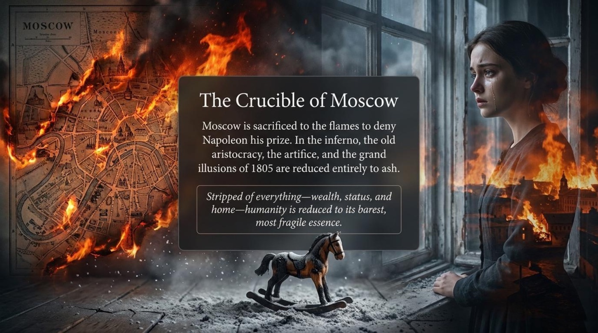
Winter finishes what fire began. "The Grand Armée is devoured by the unforgiving winter and guerrilla warfare. The imperial map shatters under the weight of the Russian climate." Yet the frame saves its deepest discovery for Pierre, captured by the retreating French army: "In French captivity, Pierre discovers true freedom through Karataev. He realizes that life itself, stripped of all ambition and societal expectation, is the ultimate good." Platon Karataev, a peasant soldier who owns nothing and resents nothing, becomes the freest man in the novel — the deck's final proof that the ordinary outranks the grand.
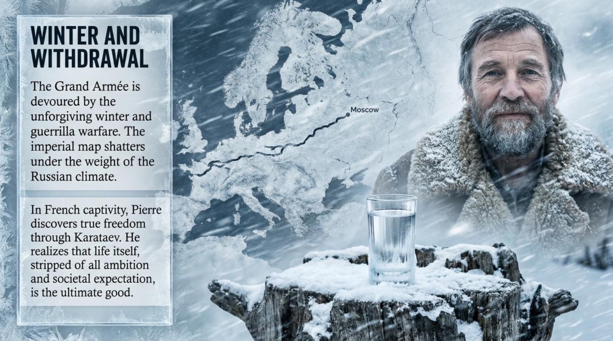
The final frame relaxes like a long exhale: "The great wars fade into the pages of textbooks. What remains for the survivors is the profound, unglamorous beauty of daily life, marriage, and family. The grand chronicle gives way, finally, to the intimate." The deck's last historical word belongs to the year 1820 — a fireside, children on the carpet, parents reading — and its last judgment is that "the true weight of history is carried not on the shoulders of generals, but in the small, ordinary gestures of daily life."
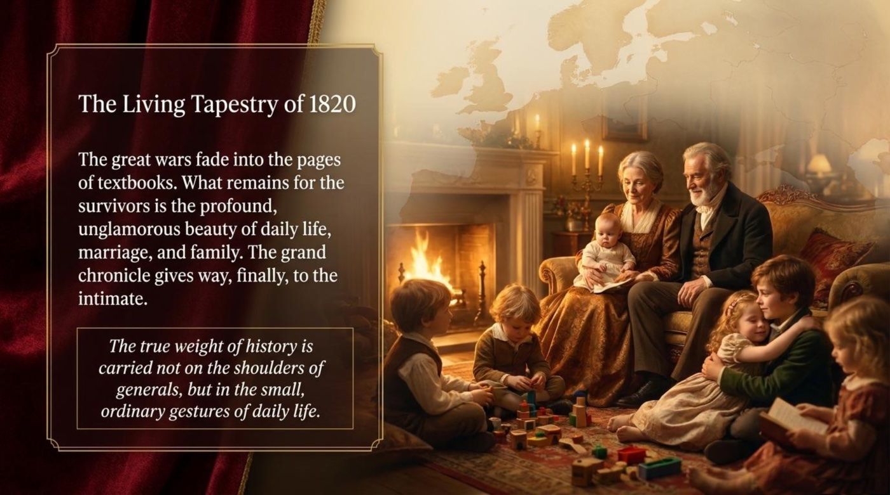
The deck's language mirrors its theme. Grand abstract nouns — invincibility, catastrophe, destiny — march beside small concrete ones — boots, letters, gestures, bread. It should be noted that the most powerful words in the material are verbs that travel between the literal and the figurative: a myth shatters, an illusion evaporates, a comet portends. The twelve entries below carry the most weight across the frames, and each one is presented with its literal sense, its meaning inside this material, and the deck's own sentence as evidence. Dotted underlines elsewhere in this article mark the same terms — hover on a desktop or tap on a phone to see a quick definition.
Literal meaning: a heavy woven fabric hung on walls, often woven with pictures and scenes.
Figurative meaning: a rich, complex weave of many separate lives, events, and threads of experience.
In the material: "A living tapestry of history and intimacy." — the deck names the entire novel a fabric in which wars and family evenings are threads of one picture, so the word carries the idea of many strands forming a single design.
The deck's own gloss: the title frame defines the tapestry by promising to "interlace the grand chronicle of armies and emperors with the small, fragile moments that make a human life" — and interlace is literally what a weaver does with threads, which turns the metaphor into an explanation.
Literal meaning: a formal evening party; borrowed from the French word for evening.
Figurative meaning: the glittering, ritualized social world of the aristocracy, where conversation is performance.
In the material: "Anna Pavlovna Scherer's soirée." — the deck sets the whole novel in motion at one evening gathering, making the word a shortcut for polite masks and polished small talk.
The deck's own gloss: the same frame calls the gathering a place of "artifice and fortune-hunting," so the soirée is defined not by music or dancing but by performance and calculation. ⚠️ A small pronunciation trap: the word keeps its French shape and rhymes roughly with hurray, and its plural is soirées.
Literal meaning: clever skill or ingenuity; by extension, a trick made to deceive.
Figurative meaning: polished insincerity; the fake elegance of high society.
In the material: "...searches desperately for spiritual meaning among the artifice and fortune-hunting of the Russian elite." — the deck pairs artifice with fortune-hunting to paint the salon as a marketplace of masks and money.
Why the pairing works: artifice is the exact opposite of the deck's closing hero, the ordinary and the authentic; the novel's whole moral journey runs from artifice toward essence.
Literal meaning: hunting for a fortune — chasing someone else's money.
Figurative meaning: courting or marrying for wealth rather than love.
In the material: the same sentence about the Russian elite — in that salon, marriage is a business deal, and the compound makes it explicit.
The deck's own gloss: the verb hunting turns social charm into a pursuit of prey, which tells the reader that charm itself is the weapon.
Literal meaning: awkward, clumsy, lacking grace in movement or appearance.
Figurative meaning: socially out of step; unable to perform the polished rituals of a group.
In the material: "Pierre Bezukhov—illegitimate, ungainly, and entirely out of place—..." — the deck places ungainly between two social judgments, so one adjective describes both Pierre's body and his position in society.
Why it matters: the word compresses a whole character sketch into three syllables; Pierre's clumsy sincerity is the engine of his story.
Literal meaning: to break suddenly into many small pieces, like glass.
Figurative meaning: to destroy a belief or an image completely and painfully.
In the material: "The myth of tactical genius shatters against the reality of cold steel." — a myth is invisible, yet the verb makes its collapse as concrete as breaking glass, and against sharpens the collision into a crash.
The deck's own gloss: the following sentence shows the result — "Looking at his former hero Napoleon, Andrei sees only a petty, vain man compared to the infinite cosmos above."
Literal meaning: quantities so small they approach zero; a technical term of mathematics.
Figurative meaning: tiny individual actions whose accumulated weight moves history.
In the material: "The Infinitesimals of Will. History as the mathematical integration of millions of small, individual choices." — the deck borrows a calculus term, and integration means summing infinitely many small parts into one total.
The deck's own gloss: the frame's quotation — "Abandoning the conception of cause, mathematics seeks law, that is, the property common to all unknown, infinitely small elements." — translates Tolstoy's philosophy of history into the language of mathematics.
Literal meaning: to signal or warn in advance that something momentous is coming.
Figurative meaning: to hang a warning in the sky; to make the future visible before it arrives.
In the material: "The Great Comet portends unprecedented catastrophe for the world—the coming invasion of 1812." — the comet does not cause the war; it announces it, which is why the deck titles the frame an omen.
Why it matters: this is a high-register verb for omens; the noun omen and the verb portend travel together and both belong to formal writing.
Literal meaning: overflowing with energy, enthusiasm, and vitality; growing luxuriantly.
Figurative meaning: a life force that spills over onto other people and heals them.
In the material: "Natasha's exuberant vitality—teaching a traumatized, grieving Andrei how to hope and love again." — the deck presents Natasha's energy as medicine for a wounded mind.
The deck's own gloss: the frame locates that vitality in "the primal, exhilarating pulse of Russian country life," so the word connects one young woman's joy to an entire landscape.
Literal meaning: a ceramic or metal pot in which substances are melted at extremely high heat.
Figurative meaning: a severe trial that burns away everything unessential and reveals the core.
In the material: "The Crucible of Moscow. Moscow is sacrificed to the flames to deny Napoleon his prize." — the burning city becomes the pot, and the aristocracy is the material inside it.
The deck's own gloss: the frame states the result of the melting — "In the inferno, the old aristocracy, the artifice, and the grand illusions of 1805 are reduced entirely to ash." When a writer calls an event a crucible, everything non-essential can expect to be destroyed.
Literal meaning: to turn liquid into vapour and disappear.
Figurative meaning: to vanish instantly, especially something that had seemed solid.
In the material: "The illusion of military genius evaporates into raw endurance." — the elegance of the phrase is that one state transforms into another rather than simply disappearing; genius becomes endurance.
Why it matters: the pattern X evaporates into Y is a ready-made structure for describing the collapse of pretence in essays and reviews.
Literal meaning: the ability to bear pain, hardship, or stress over a long time.
Figurative meaning: the quiet heroism of ordinary people, celebrated above the glamour of commanders.
In the material: "Victory here is not tactical; it is a spiritual resilience rooted deep in the Russian earth and the collective will of the peasantry." — endurance is the deck's substitute word for victory, and it belongs to peasants rather than generals.
The deck's own gloss: the thesis frame pairs the noun with quiet and relentless — "the quiet, relentless endurance of millions of invisible lives" — so the word's company tells you it means slow, stubborn survival.
The nine most valuable terms from the frames are gathered into the flip-cards below. Fronts carry the word, its part of speech, and a one-line hook; backs carry the literal meaning, the meaning inside this material, a quotation as evidence, and a note on why the word matters. Work through the cards one by one, then flip them all at once and test your memory. Remember that the cards respond to the Tab and Enter keys as well as to clicks and taps.
Four images do the symbolic heavy lifting in this deck, and each one glues a historical event to a private feeling. It is worth reading them as a set, because together they form the deck's invisible argument.
Over the battlefield of Austerlitz, the sky functions as an honest mirror. The deck writes that Andrei, looking at "his former hero Napoleon, sees only a petty, vain man compared to the infinite cosmos above." Against the sky, every human ambition shrinks to human size. The significance is liberating rather than gloomy: once Andrei stops measuring himself against emperors, he can finally hear his own life, and his gratitude is recorded in his own words — "And how happy I am to have found it at last." The sky, in other words, is the first frame of the novel's real war, which is fought against vanity.
At Otradnoe the deck paints a single oak tree with one side dead and one side bursting into leaf, which is exactly Andrei's condition after his wounds and losses. The frame's sentence is the deck's quiet thesis: "True growth happens not in the signing of treaties, but in the quiet, biological evolution of a human soul." The oak teaches that renewal is seasonal rather than heroic. Nobody signs a decree to make spring arrive, and nobody can command a grieving heart to heal — yet both happen anyway, which is precisely why the novel calls such growth biological.
The Great Comet of the deck hangs above two meanings at once. To history it "portends unprecedented catastrophe", the invasion of 1812; to Pierre it mirrors "a profound internal awakening and his newly realized love for Natasha." The deck binds the two readings into one line — "The cosmic and the deeply personal, bound together by the revolving heavens." The symbol argues that enormous public events and tiny private ones share a single sky, which is the design of the whole novel compressed into one image.
Maps decorate nearly every frame of this deck, and the deck knows exactly why. A map is control drawn in ink: borders, arrows, and the fantasy that emperors steer the world like pieces on a board. The turn comes in the winter frame — "The imperial map shatters under the weight of the Russian climate." — and the burning of Moscow completes the destruction, since the city chosen as a chessboard prize becomes a fire that reduces "the grand illusions of 1805" to ash. The symbol's lesson is the deck's lesson: ink plans, but weather, bread, and human endurance decide.
The quiz below collects eight checkpoints from the material — comprehension, vocabulary in context, true-or-false statements, and one fill-in-the-blank. Instant feedback follows every click: the correct answer lights up green, a wrong pick shakes and turns red, and a short explanation quotes the deck. The score counter and the row of dots keep track of progress, and a wrong answer costs nothing except a moment of attention. The questions, the options, and the explanations are all drawn from the frames read above.
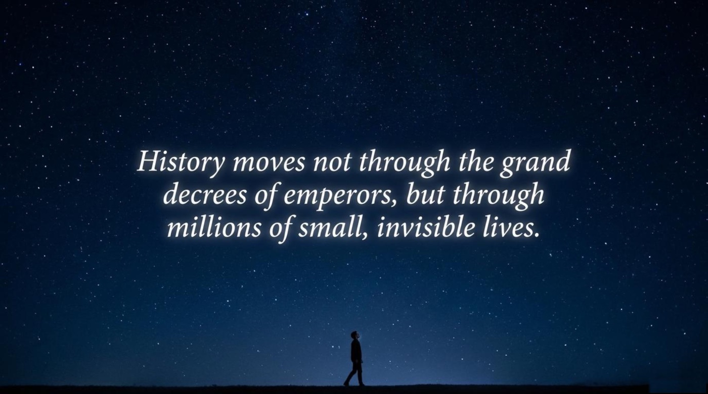
"History moves not through the grand decrees of emperors, but through millions of small, invisible lives."
— the closing frame of the presentation
That closing sentence completes the arc that began in a salon full of artifice. The material opened with emperors moving Europe like a chessboard, and it ends with history carried by invisible lives, one ordinary gesture at a time. For a language learner the lesson doubles beautifully: vocabulary grows not in grand all-night sessions but in small, relentless encounters — one flip-card over morning coffee, one quotation copied by hand, one story retold aloud to a friend.
📌 Pay attention to the deck's deepest promise — "the only thing that is truly beautiful is the ordinary" — and treat it as an instruction. Review the frames one more time, return to the novel itself, retell the journey from the soirée to the fireside in your own English, and keep every new word in a notebook you actually reopen. Small lives, small words, repeated daily — that is how both history and fluency are made.
The complete visual presentation that accompanies this article opens in a new tab.